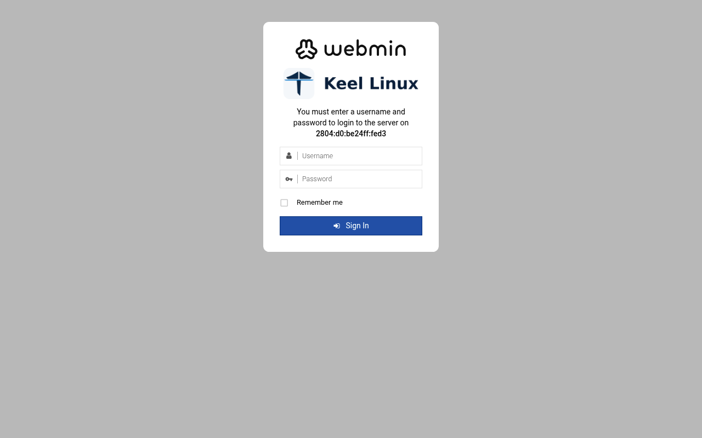
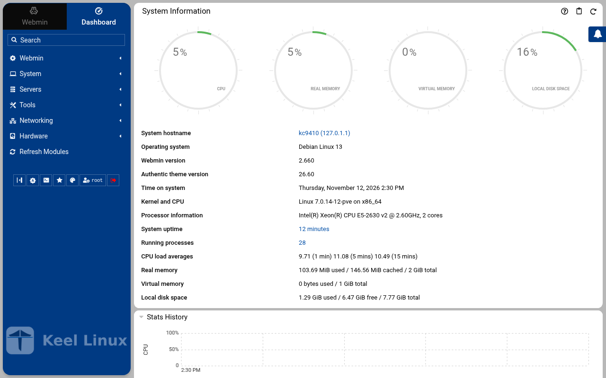
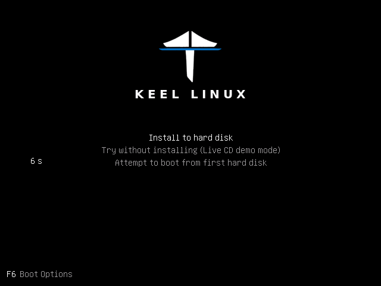
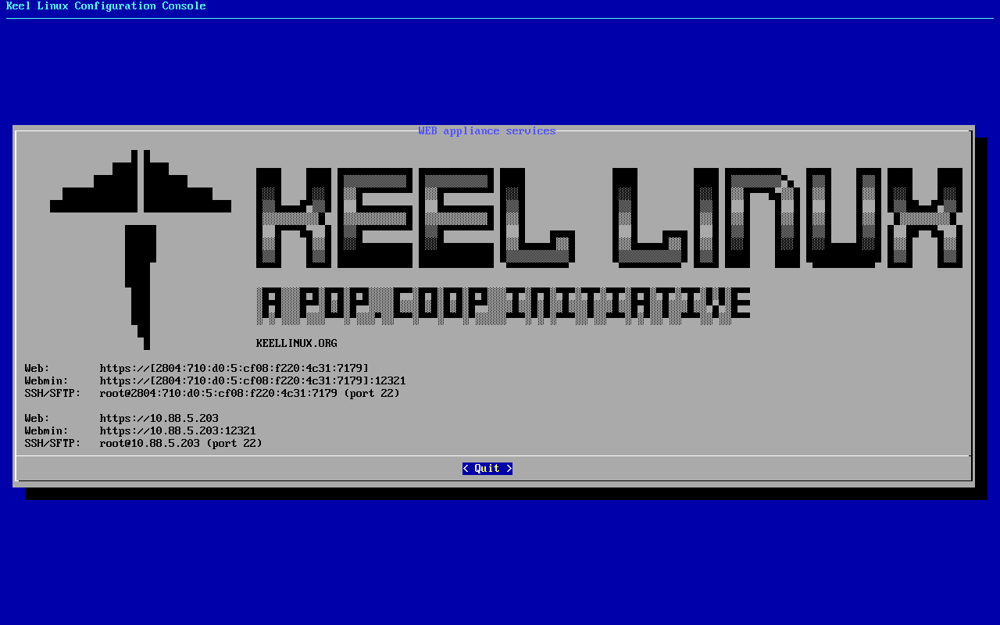

Appliances / Keel Web
Keel WebNginx of Debian 13, Coraza and Anubis
Keel release 19.0-14 · image debian-13-keel-web_19.0-14_amd64.tar.zst
Keel Web is the appliance of Keel Linux that serves the web: Nginx, Coraza (a WAF inside Nginx, with the OWASP Core Rule Set) and Anubis (proof of work, behind Nginx). It is built as a layer on Keel Core and is the base of every Keel web appliance (handbook decisions 0030, 0036 and 0041).
Install
LXC template, for Proxmox VE
debian-13-keel-web_19.0-14_amd64.tar.zst
sha256 2af5203c10466910cf2a384a3af58bab30abb3a9d1a7b0aa105ba7c5a3718bf2
With the Keel index
keel-pve gets the signed index of the Keel templates and checks the template against it. The Templates dialog of the Proxmox web interface does not show Keel templates. Install keel-pve from the Keel archive, suite trixie-testing, as its README says. Then run these commands on the Proxmox node:
keel-pve update keel-pve download local keel-web
With the file
- Download the template, its
.sha512and its.sha512.asc. - Check the signature. Then check the digest.
- Copy the template to
/var/lib/vz/template/cache/on the Proxmox node.
curl -fLO https://mirror.keellinux.org/images/debian-13-keel-web_19.0-14_amd64.tar.zst -O https://mirror.keellinux.org/images/debian-13-keel-web_19.0-14_amd64.tar.zst.sha512 -O https://mirror.keellinux.org/images/debian-13-keel-web_19.0-14_amd64.tar.zst.sha512.asc curl -fLO https://archive.keellinux.org/keel-images-keyring.asc sqv --keyring keel-images-keyring.asc debian-13-keel-web_19.0-14_amd64.tar.zst.sha512.asc debian-13-keel-web_19.0-14_amd64.tar.zst.sha512 sha512sum -c debian-13-keel-web_19.0-14_amd64.tar.zst.sha512 cp debian-13-keel-web_19.0-14_amd64.tar.zst /var/lib/vz/template/cache/
If sqv prints E71DB9C3CA6AC18075395CC3ED3A709C4F3E2F3C, the signature is good. It also prints "Missing key" for the main key of the project. This is expected.
Make the container
pct create 200 local:vztmpl/debian-13-keel-web_19.0-14_amd64.tar.zst --hostname web \ --unprivileged 1 --features nesting=1 \ --net0 name=eth0,bridge=vmbr0,ip6=auto
Start the container and log in on its console as root. The first boot asks its questions there.
ISO, for a virtual or a real machine
debian-13-keel-web_19.0-14_amd64.iso
sha256 9a4c4fb2382deed28f56f195d0bda0a76da14855ef5f91146616c78c0731ab6b
curl -fLO https://mirror.keellinux.org/images/debian-13-keel-web_19.0-14_amd64.iso -O https://mirror.keellinux.org/images/debian-13-keel-web_19.0-14_amd64.iso.sha512 -O https://mirror.keellinux.org/images/debian-13-keel-web_19.0-14_amd64.iso.sha512.asc curl -fLO https://archive.keellinux.org/keel-images-keyring.asc sqv --keyring keel-images-keyring.asc debian-13-keel-web_19.0-14_amd64.iso.sha512.asc debian-13-keel-web_19.0-14_amd64.iso.sha512 sha512sum -c debian-13-keel-web_19.0-14_amd64.iso.sha512
Boot the machine from the ISO and install. The first boot of the installed system asks the same questions as the template.
The first boot
The questions of the first boot, of all the modes and roles. A node asks only those of its mode and role (the guides below show each one):
- Root Password password
- Installation mode
- System Notifications
- Role of this node
- Invite a node
- Join a mesh
No password is copied between nodes: only the invite lines (decision 0076).
Services
nginx, ssh, webmin, postfix, cron, monit
Addresses the commissioning checked
https://127.0.0.1/http://127.0.0.1/https://127.0.0.1/keel-healthhttp://127.0.0.1/keel-healthhttps://127.0.0.1:12321/
Screenshots

open /


user root, the root secret


after the login: the page the login opened
Installation modes
Each column is one machine. Each row is one screen, in the order the machine showed it, with what the operator typed or chose. A secret is named, never shown.
Simple: one node
the LXC template, answered on the console (br1)
- 1
root password
the screen, as text
Connected to tty 1 Type <Ctrl+a q> to exit the console, <Ctrl+a Ctrl+a> to enter Ctrl+a itself press Enter within 5 s to answer first-boot questions Keel Linux Configuration Console KC9410 appliance services < Quit > Web:https://[2804:710:d0:5:be24:11ff:fed3:3045]Webmin: https://[2804:710:d0:5:be24:11ff:fed3:3045]:12321SSH/SFTP: root@2804:710:d0:5:be24:11ff:fed3:3045 (port 22)Web:https://10.88.5.221Webmin: https://10.88.5.221:12321SSH/SFTP: root@10.88.5.221 (port 22) Keel Linux Configuration Console KC9410 appliance services < Quit > Web:https://[2804:710:d0:5:be24:11ff:fed3:3045]Webmin: https://[2804:710:d0:5:be24:11ff:fed3:3045]:12321SSH/SFTP: root@2804:710:d0:5:be24:11ff:fed3:3045 (port 22)Web:https://10.88.5.221Webmin: https://10.88.5.221:12321SSH/SFTP: root@10.88.5.221 (port 22) Debian GNU/Linux 13 kc9410 tty1 kc9410 login: root Password: Keel Linux web 19.0-trixie-amd64 IPv6 Web: https://[2804:710:d0:5:be24:11ff:fed3:3045] IPv6 SSH: root@2804:710:d0:5:be24:11ff:fed3:3045 IPv4 Web: https://10.88.5.221 IPv4 SSH: root@10.88.5.221 Welcome to kc9410, Keel Linux 19.0 (Debian 13/Trixie) System information for Thu Nov 12 14:18:31 2026 (UTC+0000) System load: 20.47 Memory usage: 7.4% Processes: 32 Swap usage: 0.0% Usage of /: 11.4% of 7.78GB IP address for eth0: 10.88.5.221 This system is not initialized yet: run keel-init to set it up. For Advanced commandline config run: confconsole For more info see: https://github.com/Keel-Linux/confconsole Linux kc9410 7.0.14-12-pve #1 SMP PREEMPT_DYNAMIC PMX 7.0.14-12 (2026-08-11T11:05Z) x86_64 === Keel Linux - First boot configuration Root Password Please enter new password for the root account. Choose how to set this password: Generate A strong random password (recommended) Manual Type my own password < OK >Generate A strong random password (recommended)Manual Type my own password Keel Linux - First boot configuration Root Password Please enter new password for the root account. Password Requirements - must be at least 8 characters long - must contain characters from at least 3 of the following categories: uppercase, lowercase, numbers, symbols < OK >x
typed:
(the root secret) - 2
root password
the screen, as text
******** Keel Linux - First boot configuration Root Password Confirm password Password Requirements - must be at least 8 characters long - must contain characters from at least 3 of the following categories: uppercase, lowercase, numbers, symbols < OK >x
typed:
(the root secret) - 3
mode
the screen, as text
******** Keel Linux - First boot configuration kc9410.pop.coop Domain name xxx The name this machine is reached by, with its domain, xx for example blog.example.org. It becomes the hostname, xx the name /etc/hosts answers for this machine, and the xx domain a TLS certificate is requested for in xx confconsole.xxxx Leave the field empty to keep the name the machine has. xxxx Fully qualified domain name:x <Apply>x >fqdn: /etc/keel/instance.yaml already declares the name, not written === Keel Linux - First boot configuration Installation mode How this appliance is installed (decision 0028). You choose it once. Simple: one node. Everything is on this machine, with no mesh. Cloud simple: two nodes, a primary and a replica on a WireGuard mesh. The data follows the primary. When the primary stops, you promote the replica by hand. Cloud advanced: two data nodes and a witness, three sites, etcd of three. When the primary stops, the replica takes over by itself. Choose the same mode on every node of the set. Simple one node, no mesh Cloud simple two nodes, failover by hand Cloud advanced two nodes and a witness, failover by itself <Select>
typed:
<ret> - 4
mode
the screen, as text
Keel Linux - First boot configuration Installation mode < ok >x /etc/keel/instance.yaml: installation.mode: simple$ keel spec apply --system-only --non-interactive --skip-network --defer-certificate --spec/etc/keel/instance.yamlapply --system-only: /etc/inithooks.conf not read or writteninstance.hostname: unchanged (kc9410)instance.fqdn: unchanged (/etc/hosts maps kc9410 to kc9410.pop.coop)derived.monit: write /etc/keel/monit/keel-manifest.conf: 4 unit(s) and 4 probe(s) of web (mode 0600): doneoverlays.syncthing: unchanged (disabled: syncthing.service)overlays.anubis: run /usr/lib/keel/overlays/anubis/state.d/50keel-web: the overlay is disabled(/usr/lib/keel/overlays/anubis/state.d/50keel-web disabled): doneoverlays.anubis: record disabled and the hooks' digest in /var/lib/keel/overlays/anubis (mode 0644): doneoverlays.coraza: run /usr/lib/keel/overlays/coraza/state: the overlay is disabled(/usr/lib/keel/overlays/coraza/state disabled): doneoverlays.coraza: record disabled and the hooks' digest in /var/lib/keel/overlays/coraza (mode 0644): doneoverlays.vip: unchanged (disabled: keel-vip.service)overlays.crowdsec: unchanged (disabled: crowdsec.service, crowdsec-firewall-bouncer.service)overlays.etcd: unchanged (disabled: etcd.service)overlays.nginx: unchanged (enabled: nginx.service)apply --system-only: 5 change(s), 0 failedkeel apply: exit 0, the spec was applied
typed:
<ret> - 5
alert email
the screen, as text
>keelfirstboot role: no database server on this machine, so no role to record keelfirstboot cloud: Keel Cloud is not available yet: no key is asked, and this node runs standalone. It is offered once /etc/keel/cloud-endpoint names the service. === Keel Linux - First boot configuration System Notifications and Critical Security Alerts Enable local system notifications (root@localhost) to be forwarded to your regular inbox. Notifications include security updates and system messages. Email: <Enable> < Skip >x
typed:
admin@example.org - 6
web: site
typed:
open / - 7
- 8
the ISO in a virtual machine (br1)
- 1
- 2
installer-boot

- 3
- 4
partitioning

typed:
<ret> - 5
- 6
- 7
- 8
begin

typed:
y - 9
installer-wait

- 10
- 11
medium

typed:
<ret><ret> - 12
root password-menu

typed:
m<ret> - 13
- 14
- 15
- 16
- 17
mode

typed:
<ret> - 18
- 19
- 20
firstboot-screen

typed:
<ret> - 21
firstboot-screen

typed:
<ret> - 22
firstboot-end

- 23
web: site

typed:
open / - 24
- 25


Cloud simple: two nodes, failover by hand
| Step | Primary, BR1 | Replica, BR2 |
|---|---|---|
| 1 | root password the screen, as textConnected to tty 1 Type <Ctrl+a q> to exit the console, <Ctrl+a Ctrl+a> to enter Ctrl+a itself press Enter within 5 s to answer first-boot questions Keel Linux Configuration Console KC9413 appliance services < Quit > Web:https://[2804:710:d0:5:be24:11ff:fe9d:4bf0]Webmin: https://[2804:710:d0:5:be24:11ff:fe9d:4bf0]:12321SSH/SFTP: root@2804:710:d0:5:be24:11ff:fe9d:4bf0 (port 22) Keel Linux Configuration Console KC9413 appliance services < Quit > Web:https://[2804:710:d0:5:be24:11ff:fe9d:4bf0]Webmin: https://[2804:710:d0:5:be24:11ff:fe9d:4bf0]:12321SSH/SFTP: root@2804:710:d0:5:be24:11ff:fe9d:4bf0 (port 22) Debian GNU/Linux 13 kc9413 tty1 kc9413 login: root Password: Keel Linux web 19.0-trixie-amd64 IPv6 Web: https://[2804:710:d0:5:be24:11ff:fe9d:4bf0] IPv6 SSH: root@2804:710:d0:5:be24:11ff:fe9d:4bf0 Welcome to kc9413, Keel Linux 19.0 (Debian 13/Trixie) System information for Thu Nov 12 17:11:29 2026 (UTC+0000) System load: 9.36 Memory usage: 9.2% Processes: 32 Swap usage: 0.0% Usage of /: 11.4% of 7.78GB Networking not configured This system is not initialized yet: run keel-init to set it up. For Advanced commandline config run: confconsole For more info see: https://github.com/Keel-Linux/confconsole Linux kc9413 7.0.14-12-pve #1 SMP PREEMPT_DYNAMIC PMX 7.0.14-12 (2026-08-11T11:05Z) x86_64 === Keel Linux - First boot configuration Root Password Please enter new password for the root account. Choose how to set this password: Generate A strong random password (recommended) Manual Type my own password < OK >Generate A strong random password (recommended)Manual Type my own password Keel Linux - First boot configuration Root Password Please enter new password for the root account. Password Requirements - must be at least 8 characters long - must contain characters from at least 3 of the following categories: uppercase, lowercase, numbers, symbols < OK >x typed: | root password the screen, as textConnected to tty 1 Type <Ctrl+a q> to exit the console, <Ctrl+a Ctrl+a> to enter Ctrl+a itself press Enter within 5 s to answer first-boot questions Keel Linux Configuration Console KC9414 appliance services < Quit > Web:https://[fd00:218:88:0:f6da:1bba:f8c4:4bed]Webmin: https://[fd00:218:88:0:f6da:1bba:f8c4:4bed]:12321SSH/SFTP: root@fd00:218:88:0:f6da:1bba:f8c4:4bed (port 22)Web:https://10.218.88.183Webmin: https://10.218.88.183:12321SSH/SFTP: root@10.218.88.183 (port 22) Keel Linux Configuration Console KC9414 appliance services < Quit > Web:https://[fd00:218:88:0:f6da:1bba:f8c4:4bed]Webmin: https://[fd00:218:88:0:f6da:1bba:f8c4:4bed]:12321SSH/SFTP: root@fd00:218:88:0:f6da:1bba:f8c4:4bed (port 22)Web:https://10.218.88.183Webmin: https://10.218.88.183:12321SSH/SFTP: root@10.218.88.183 (port 22) Debian GNU/Linux 13 kc9414 tty1 kc9414 login: root Password: Keel Linux web 19.0-trixie-amd64 IPv6 Web: https://[2804:7f0:9880:202:daa9:3c34:2250:4b05] IPv6 SSH: root@2804:7f0:9880:202:daa9:3c34:2250:4b05 IPv4 Web: https://10.218.88.183 IPv4 SSH: root@10.218.88.183 Welcome to kc9414, Keel Linux 19.0 (Debian 13/Trixie) System information for Thu Nov 12 17:14:15 2026 (UTC+0000) System load: 7.88 Memory usage: 6.6% Processes: 35 Swap usage: 0.0% Usage of /: 8.3% of 8.00GB IP address for eth0: 10.218.88.183 This system is not initialized yet: run keel-init to set it up. For Advanced commandline config run: confconsole For more info see: https://github.com/Keel-Linux/confconsole Linux kc9414 7.0.14-19-pve #1 SMP PREEMPT_DYNAMIC PMX 7.0.14-19 (2026-09-18T07:31Z) x86_64 === Keel Linux - First boot configuration Root Password Please enter new password for the root account. Choose how to set this password: Generate A strong random password (recommended) Manual Type my own password < OK >Generate A strong random password (recommended)Manual Type my own password Keel Linux - First boot configuration Root Password Please enter new password for the root account. Password Requirements - must be at least 8 characters long - must contain characters from at least 3 of the following categories: uppercase, lowercase, numbers, symbols < OK >x typed: |
| 2 | root password the screen, as text******** Keel Linux - First boot configuration Root Password Confirm password Password Requirements - must be at least 8 characters long - must contain characters from at least 3 of the following categories: uppercase, lowercase, numbers, symbols < OK >x typed: | root password the screen, as text******** Keel Linux - First boot configuration Root Password Confirm password Password Requirements - must be at least 8 characters long - must contain characters from at least 3 of the following categories: uppercase, lowercase, numbers, symbols < OK >x typed: |
| 3 | mode the screen, as text******** Keel Linux - First boot configuration kc9413.pop.coop Domain name xxx The name this machine is reached by, with its domain, xx for example blog.example.org. It becomes the hostname, xx the name /etc/hosts answers for this machine, and the xx domain a TLS certificate is requested for in xx confconsole.xxxx Leave the field empty to keep the name the machine has. xxxx Fully qualified domain name:x <Apply>x >fqdn: /etc/keel/instance.yaml already declares the name, not written === Keel Linux - First boot configuration Installation mode How this appliance is installed (decision 0028). You choose it once. Simple: one node. Everything is on this machine, with no mesh. Cloud simple: two nodes, a primary and a replica on a WireGuard mesh. The data follows the primary. When the primary stops, you promote the replica by hand. Cloud advanced: two data nodes and a witness, three sites, etcd of three. When the primary stops, the replica takes over by itself. Choose the same mode on every node of the set. Simple one node, no mesh Cloud simple two nodes, failover by hand Cloud advanced two nodes and a witness, failover by itself <Select> typed: | mode the screen, as text******** Keel Linux - First boot configuration kc9414.pop.coop Domain name xxx The name this machine is reached by, with its domain, xx for example blog.example.org. It becomes the hostname, xx the name /etc/hosts answers for this machine, and the xx domain a TLS certificate is requested for in xx confconsole.xxxx Leave the field empty to keep the name the machine has. xxxx Fully qualified domain name:x <Apply>x >fqdn: /etc/keel/instance.yaml already declares the name, not written === Keel Linux - First boot configuration Installation mode How this appliance is installed (decision 0028). You choose it once. Simple: one node. Everything is on this machine, with no mesh. Cloud simple: two nodes, a primary and a replica on a WireGuard mesh. The data follows the primary. When the primary stops, you promote the replica by hand. Cloud advanced: two data nodes and a witness, three sites, etcd of three. When the primary stops, the replica takes over by itself. Choose the same mode on every node of the set. Simple one node, no mesh Cloud simple two nodes, failover by hand Cloud advanced two nodes and a witness, failover by itself <Select> typed: |
| 4 | role the screen, as textSimpleone node, no meshCloud simple two nodes, failover by hand> == Keel Linux - First boot configuration Installation mode < ok >x /etc/keel/instance.yaml: installation.mode: cloud_simple$ keel spec apply --system-only --non-interactive --skip-network --defer-certificate --spec/etc/keel/instance.yaml2026-11-12 17:11:44 INF Generating key and certificate (cn=syncthing log.pkg=syncthing)2026-11-12 17:11:44 INF Calculated device ID(device=PFTFALK-6NVDB3V-FQHNPTA-Z7NL2BW-WGHVVWO-HEDC2O7-FSJ7VS3-D3MLHQX log.pkg=github)apply --system-only: /etc/inithooks.conf not read or writteninstance.hostname: unchanged (kc9413)instance.fqdn: unchanged (/etc/hosts maps kc9413 to kc9413.pop.coop)derived.monit: crowdsec not watched: crowdsec.service starts only when /etc/crowdsec/local_api_credentials.yamlexists (ConditionPathExists)derived.monit: crowdsec-lapi not watched: its process crowdsec is not watched: crowdsec.service starts only when/etc/crowdsec/local_api_credentials.yaml exists (ConditionPathExists)derived.monit: write /etc/keel/monit/keel-manifest.conf: 7 unit(s) and 7 probe(s) of web (mode 0600): doneoverlays.vip: unchanged (disabled: keel-vip.service)overlays.etcd: unchanged (disabled: etcd.service)overlays.crowdsec: create /etc/crowdsec/online_api_credentials.yaml empty, which CrowdSec's unit needs and whichsays not registered yet (mode 0600): doneoverlays.crowdsec: register this machine with CrowdSec's local API; cscli writes the password to/etc/crowdsec/local_api_credentials.yaml (cscli --error machines add --auto --force): doneoverlays.crowdsec: register with CrowdSec's central API (cscli --error capi register): doneoverlays.crowdsec: register CrowdSec's firewall bouncer (cscli bouncers add) and write its key to/etc/crowdsec/bouncers/crowdsec-firewall-bouncer.yaml.local (mode 0600, never printed) and its name to/etc/crowdsec/bouncers/crowdsec-firewall-bouncer.yaml.id, mode: nftables: doneoverlays.crowdsec: enable crowdsec.service: the overlay is enabled (systemctl enable crowdsec.service): doneoverlays.crowdsec: start crowdsec.service (systemctl start crowdsec.service): doneoverlays.crowdsec: enable crowdsec-firewall-bouncer.service: the overlay is enabled (systemctl enablecrowdsec-firewall-bouncer.service): doneoverlays.crowdsec: start crowdsec-firewall-bouncer.service (systemctl start crowdsec-firewall-bouncer.service):done57% Keel Linux - First boot configuration Role of this node What this node is in its set of two (cloud simple). Primary: the first node. It makes the mesh and invites the replica with a line you copy to it. Replica: the second node. It joins with that line, and its data follows the primary. Primary the first node: makes the mesh, invites Replica joins the primary; its data follows it <Select> typed: | role the screen, as textSimpleone node, no meshCloud simple two nodes, failover by hand> == Keel Linux - First boot configuration Installation mode < ok >x /etc/keel/instance.yaml: installation.mode: cloud_simple$ keel spec apply --system-only --non-interactive --skip-network --defer-certificate --spec/etc/keel/instance.yaml2026-11-12 17:14:31 INF Generating key and certificate (cn=syncthing log.pkg=syncthing)2026-11-12 17:14:31 INF Calculated device ID(device=XPSIN2P-LU36PVG-YOMTD4H-SPGVWW6-GL6VFVX-IZDZ5U5-K66GNXK-YO3WKQZ log.pkg=github)apply --system-only: /etc/inithooks.conf not read or writteninstance.hostname: unchanged (kc9414)instance.fqdn: unchanged (/etc/hosts maps kc9414 to kc9414.pop.coop)derived.monit: crowdsec not watched: crowdsec.service starts only when /etc/crowdsec/local_api_credentials.yamlexists (ConditionPathExists)derived.monit: crowdsec-lapi not watched: its process crowdsec is not watched: crowdsec.service starts only when/etc/crowdsec/local_api_credentials.yaml exists (ConditionPathExists)derived.monit: write /etc/keel/monit/keel-manifest.conf: 7 unit(s) and 7 probe(s) of web (mode 0600): doneoverlays.vip: unchanged (disabled: keel-vip.service)overlays.etcd: unchanged (disabled: etcd.service)overlays.crowdsec: create /etc/crowdsec/online_api_credentials.yaml empty, which CrowdSec's unit needs and whichsays not registered yet (mode 0600): doneoverlays.crowdsec: register this machine with CrowdSec's local API; cscli writes the password to/etc/crowdsec/local_api_credentials.yaml (cscli --error machines add --auto --force): doneoverlays.crowdsec: register with CrowdSec's central API (cscli --error capi register): doneoverlays.crowdsec: register CrowdSec's firewall bouncer (cscli bouncers add) and write its key to/etc/crowdsec/bouncers/crowdsec-firewall-bouncer.yaml.local (mode 0600, never printed) and its name to/etc/crowdsec/bouncers/crowdsec-firewall-bouncer.yaml.id, mode: nftables: doneoverlays.crowdsec: enable crowdsec.service: the overlay is enabled (systemctl enable crowdsec.service): doneoverlays.crowdsec: start crowdsec.service (systemctl start crowdsec.service): doneoverlays.crowdsec: enable crowdsec-firewall-bouncer.service: the overlay is enabled (systemctl enablecrowdsec-firewall-bouncer.service): doneoverlays.crowdsec: start crowdsec-firewall-bouncer.service (systemctl start crowdsec-firewall-bouncer.service):done57% Keel Linux - First boot configuration Role of this node What this node is in its set of two (cloud simple). Primary: the first node. It makes the mesh and invites the replica with a line you copy to it. Replica: the second node. It joins with that line, and its data follows the primary. Primary the first node: makes the mesh, invites Replica joins the primary; its data follows it <Select> typed: |
| 5 | invite the screen, as textKeel Linux - First boot configuration keel mesh create: making the mesh... Keel Linux - First boot configuration Make the mesh < ok >x $ keel mesh createcreated the mesh: this node is fd4d:42ed:dac9::1/64 on wg0, WireGuard on UDP 51820keel mesh invite prints the line that joins the next nodeconfirming the new overlayconfirmed from keel mesh createthe overlay has no peer, so nothing can cross it: keel mesh create confirmed it once the routes to the gatewaysand to the operator's session were found to still leave through the uplinkwg-quick@wg0 enabled: the overlay comes back up at bootthe network change stays; the revert is cancelledmesh: this node holds the mesh's root CA, which signs the database certificates of a cloud simple pairkeel mesh: exit 0, done>Invite a node This node invites the replica (node 2) into its mesh. Copy the line below to the replica (node 2): paste it into its Join a mesh screen, or run it there as root. It can be used once, until 2026-11-12T18:12:25Z. The line carries the service address of the pair, shown below: this node writes it as its appliance.vip, and the replica takes it from the join. Nobody types it. Copy this line to the replica (node 2), on one line, as it is. It is a secret: it lets one node join this mesh. keel mesh join - <<< <invite 1> VIP: fd4d:42ed:dac9::ffff:1 Expires: 2026-11-12T18:12:25Z Press Enter to go on: typed: | join the screen, as textPrimary the first node: makes the mesh, invitesReplica joins the primary; its data follows it Keel Linux - First boot configuration Join a mesh Paste the line that Invite a node shows on the inviting node: keel mesh join - <<< keel2:... The token alone (keel2:...) is accepted too. It goes to keel on its standard input, never on a command line. < OK > <Cancel>x typed: |
| 6 | alert email the screen, as textThis node: fd4d:42ed:dac9::1/64 VIP: fd4d:42ed:dac9::ffff:1, holder none yet 5 <Select> < Back >x 4 3 2 1 0 Keel Linux - First boot configuration Waiting for the nodes Waiting for the replica (node 2) to join with the line, checked every 5 s. Back gives a menu: Paste accept line, when the join printed one (keel mesh accept keel1a:...), or the line again. This node: fd4d:42ed:dac9::1/64 VIP: fd4d:42ed:dac9::ffff:1, holder none yet 5 <Select> < Back >x 4 3 2 1 0 Keel Linux - First boot configuration Waiting for the nodes Waiting for the replica (node 2) to join with the line, checked every 5 s. Back gives a menu: Paste accept line, when the join printed one (keel mesh accept keel1a:...), or the line again. This node: fd4d:42ed:dac9::1/64 VIP: fd4d:42ed:dac9::ffff:1, holder none yet 5 <Select> < Back >x 4 3 2 1 0 Keel Linux - First boot configuration Take the VIP < ok >x $ keel vip promotefd4d:42ed:dac9::19be: appliedthis node holds fd4d:42ed:dac9::ffff:1 at epoch 1, on wg0, taken by the other member of the pair; the otherpeers are told in the backgroundkeel vip: exit 0, done Keel Linux - First boot configuration Status of this node < ok >x $ keel vip statusvip fd4d:42ed:dac9::ffff:1: this node's appliance.viprole: primaryepoch 1, held by <public key> at fd4d:42ed:dac9::1carried here: yesrouted to: no peer$ keel mesh statusthis node: fd4d:42ed:dac9::1/64 on wg0, WireGuard on UDP 51820mesh identity: dd0ae31b8fe7519962f687e7cf626206public key: <public key>peers: 1<public key> fd4d:42ed:dac9::19be/128[2804:7f0:9880:202:daa9:3c34:2250:4b05]:51820 handshake 10 s agopending invites: 0etcd: not on this node (installation.mode cloud_simple; etcd runs on cloud advanced members only)vip fd4d:42ed:dac9::ffff:1: this node's appliance.viprole: primaryepoch 1, held by <public key> at fd4d:42ed:dac9::1carried here: yesrouted to: no peer>keelfirstboot cloud: Keel Cloud is not available yet: no key is asked, and this node runs standalone. It is offered once /etc/keel/cloud-endpoint names the service. === Keel Linux - First boot configuration System Notifications and Critical Security Alerts Enable local system notifications (root@localhost) to be forwarded to your regular inbox. Notifications include security updates and system messages. Email: <Enable> < Skip >x typed: | alert email the screen, as text<invite 1><invite 1><invite 1><invite 1><invite 1><invite 1><invite 1><invite 1><invite 1><invite 1><invite 1><invite 1><invite 1><invite 1><invite 1><invite 1><invite 1><invite 1><invite 1><invite 1><invite 1><invite 1><invite 1><invite 1><invite 1><invite 1><invite 1><invite 1><invite 1><invite 1><invite 1><invite 1><invite 1><invite 1><invite 1><invite 1><invite 1><invite 1><invite 1><invite 1><invite 1><invite 1><invite 1><invite 1><invite 1><invite 1><invite 1><invite 1><invite 1><invite 1><invite 1><invite 1><invite 1><invite 1><invite 1><invite 1><invite 1><invite 1><invite 1><invite 1><invite 1><invite 1><invite 1><invite 1><invite 1><invite 1><invite 1><invite 1><invite 1><invite 1><invite 1><invite 1><invite 1><invite 1><invite 1><invite 1><invite 1><invite 1><invite 1><invite 1><invite 1><invite 1><invite 1><invite 1>F<invite 1>FA<invite 1><invite 1><invite 1><invite 1><invite 1><invite 1><invite 1><invite 1><invite 1><invite 1><invite 1><invite 1><invite 1><invite 1><invite 1><invite 1><invite 1><invite 1><invite 1><invite 1><invite 1><invite 1><invite 1><invite 1><invite 1><invite 1><invite 1><invite 1><invite 1><invite 1><invite 1><invite 1><invite 1><invite 1><invite 1><invite 1><invite 1><invite 1><invite 1><invite 1><invite 1><invite 1><invite 1><invite 1><invite 1><invite 1><invite 1><invite 1><invite 1><invite 1><invite 1><invite 1><invite 1><invite 1><invite 1><invite 1><invite 1>yQ<invite 1><invite 1>Q<invite 1><invite 1><invite 1><invite 1><invite 1><invite 1><invite 1><invite 1><invite 1><invite 1><invite 1><invite 1><invite 1><invite 1><invite 1><invite 1><invite 1><invite 1><invite 1><invite 1><invite 1><invite 1>rJ<invite 1>J<invite 1><invite 1><invite 1><invite 1><invite 1><invite 1><invite 1><invite 1><invite 1><invite 1><invite 1><invite 1><invite 1><invite 1><invite 1><invite 1><invite 1><invite 1><invite 1><invite 1><invite 1><invite 1><invite 1><invite 1><invite 1><invite 1><invite 1><invite 1><invite 1><invite 1><invite 1><invite 1><invite 1><invite 1><invite 1><invite 1><invite 1><invite 1><invite 1><invite 1><invite 1><invite 1><invite 1><invite 1><invite 1><invite 1><invite 1><invite 1><invite 1><invite 1><invite 1><invite 1><invite 1><invite 1><invite 1>D<invite 1>D_<invite 1><invite 1><invite 1><invite 1><invite 1><invite 1><invite 1><invite 1><invite 1><invite 1><invite 1>>Join a mesh Join a mesh: keel joins this node to the mesh. When the inviting node cannot be reached, keel prints a line keel mesh accept keel1a:... and waits: run that line on the inviting node, or paste it into its Paste accept line screen. endpoint 2804:7f0:9880:202:daa9:3c34:2250:4b05, found on eth0 (--endpoint overrides it) confirming over the overlay confirmed from the inviter's answer over the overlay (invite aed953ebbd8c1f05) the overlay was tested: the inviter's answer over the overlay (invite aed953ebbd8c1f05) arrived at fd4d:42ed:dac9::19be on wg0, from fd4d:42ed:dac9::1 wg-quick@wg0 enabled: the overlay comes back up at boot the network change stays; the revert is cancelled joined the mesh: this node is fd4d:42ed:dac9::19be/64 on wg0 peer: <public key> at fd4d:42ed:dac9::1, through [2804:710:d0:5:be24:11ff:fe9d:4bf0]:51820 the mesh is up with 2 nodes; etcd starts when a third node joins, because 2 etcd members cannot lose one and keep a majority vip: fd4d:42ed:dac9::ffff:1, proposed by the inviter for the pair (appliance.vip on both nodes; keel mesh status --json gives it) Press Enter to go on: == Keel Linux - First boot configuration Pair with the primary < ok >x $ keel vip pair fd4d:42ed:dac9::1fd4d:42ed:dac9::ffff:1 is the VIP of <public key> and<public key>, signed by bothkeel vip: exit 0, done Keel Linux - First boot configuration Pair with the primary < ok >x $ keel spec apply --system-only --non-interactive --skip-network --defer-certificate --spec/etc/keel/instance.yamlapply --system-only: /etc/inithooks.conf not read or writteninstance.hostname: unchanged (kc9414)instance.fqdn: unchanged (/etc/hosts maps kc9414 to kc9414.pop.coop)derived.monit: keel-vip not watched: keel-vip.service starts only when /var/lib/keel/etcd/cluster.json exists(ConditionPathExists)derived.monit: unchanged (/etc/keel/monit/keel-manifest.conf, 8 unit(s) and 8 probe(s) of web, not included)overlays.etcd: unchanged (disabled: etcd.service)overlays.crowdsec: unchanged (enabled: crowdsec.service, crowdsec-firewall-bouncer.service)overlays.vip: enable keel-vip.service: the overlay is enabled (systemctl enable keel-vip.service): doneoverlays.vip: keel-vip.service waits for etcd's cluster (cluster.json): it starts once etcd forms; without etcd,keel vip check (keel-vip-check.timer) does its work (keel#106)overlays.nginx: unchanged (enabled: nginx.service)overlays.coraza: unchanged (enabled: /usr/lib/keel/overlays/coraza/state)overlays.anubis: unchanged (enabled: anubis@keel.service, /usr/lib/keel/overlays/anubis/state.d/50keel-web)overlays.syncthing: unchanged (enabled: syncthing.service)network.overlay: not brought up in this run (--skip-network)apply --system-only: 1 change(s), 0 failedkeel apply: exit 0, the spec was applied Keel Linux - First boot configuration Status of this node < ok >x $ keel vip statusvip fd4d:42ed:dac9::ffff:1: this node's appliance.viprole: replicaepoch 1, held by <public key> at fd4d:42ed:dac9::1carried here: norouted to: <public key>$ keel mesh statusthis node: fd4d:42ed:dac9::19be/64 on wg0, WireGuard on UDP 51820mesh identity: dd0ae31b8fe7519962f687e7cf626206public key: <public key>peers: 1<public key> fd4d:42ed:dac9::1/128 [2804:710:d0:5:be24:11ff:fe9d:4bf0]:51820handshake 16 s agopending invites: 0etcd: not on this node (installation.mode cloud_simple; etcd runs on cloud advanced members only)vip fd4d:42ed:dac9::ffff:1: this node's appliance.viprole: replicaepoch 1, held by <public key> at fd4d:42ed:dac9::1carried here: norouted to: <public key>>keelfirstboot cloud: Keel Cloud is not available yet: no key is asked, and this node runs standalone. It is offered once /etc/keel/cloud-endpoint names the service. === Keel Linux - First boot configuration System Notifications and Critical Security Alerts Enable local system notifications (root@localhost) to be forwarded to your regular inbox. Notifications include security updates and system messages. Email: <Enable> < Skip >x typed: |
| 7 | web: site  typed: | web: site  typed: |
| 8 | ||
| 9 |


Cloud advanced: two data nodes and a witness
| Step | Primary, BR1 | Replica, BR2 | Witness, BR1 |
|---|---|---|---|
| 1 | root password the screen, as textConnected to tty 1 Type <Ctrl+a q> to exit the console, <Ctrl+a Ctrl+a> to enter Ctrl+a itself press Enter within 5 s to answer first-boot questions Keel Linux Configuration Console KC9415 appliance services < Quit > Web:https://[2804:710:d0:5:be24:11ff:fe99:ec6b]Webmin: https://[2804:710:d0:5:be24:11ff:fe99:ec6b]:12321SSH/SFTP: root@2804:710:d0:5:be24:11ff:fe99:ec6b (port 22)Web:https://10.88.5.214Webmin: https://10.88.5.214:12321SSH/SFTP: root@10.88.5.214 (port 22) Keel Linux Configuration Console KC9415 appliance services < Quit > Web:https://[2804:710:d0:5:be24:11ff:fe99:ec6b]Webmin: https://[2804:710:d0:5:be24:11ff:fe99:ec6b]:12321SSH/SFTP: root@2804:710:d0:5:be24:11ff:fe99:ec6b (port 22)Web:https://10.88.5.214Webmin: https://10.88.5.214:12321SSH/SFTP: root@10.88.5.214 (port 22) Debian GNU/Linux 13 kc9415 tty1 kc9415 login: root Password: Keel Linux web 19.0-trixie-amd64 IPv6 Web: https://[2804:710:d0:5:be24:11ff:fe99:ec6b] IPv6 SSH: root@2804:710:d0:5:be24:11ff:fe99:ec6b IPv4 Web: https://10.88.5.214 IPv4 SSH: root@10.88.5.214 Welcome to kc9415, Keel Linux 19.0 (Debian 13/Trixie) System information for Thu Nov 12 14:38:57 2026 (UTC+0000) System load: 9.06 Memory usage: 9.2% Processes: 32 Swap usage: 0.0% Usage of /: 11.4% of 7.78GB IP address for eth0: 10.88.5.214 This system is not initialized yet: run keel-init to set it up. For Advanced commandline config run: confconsole For more info see: https://github.com/Keel-Linux/confconsole Linux kc9415 7.0.14-12-pve #1 SMP PREEMPT_DYNAMIC PMX 7.0.14-12 (2026-08-11T11:05Z) x86_64 === Keel Linux - First boot configuration Root Password Please enter new password for the root account. Choose how to set this password: Generate A strong random password (recommended) Manual Type my own password < OK >Generate A strong random password (recommended)Manual Type my own password Keel Linux - First boot configuration Root Password Please enter new password for the root account. Password Requirements - must be at least 8 characters long - must contain characters from at least 3 of the following categories: uppercase, lowercase, numbers, symbols < OK >x typed: | root password the screen, as textConnected to tty 1 Type <Ctrl+a q> to exit the console, <Ctrl+a Ctrl+a> to enter Ctrl+a itself press Enter within 5 s to answer first-boot questions Keel Linux Configuration Console KC9416 appliance services < Quit > Web:https://[fd00:218:88:0:f64e:ec3b:4442:3dfc]Webmin: https://[fd00:218:88:0:f64e:ec3b:4442:3dfc]:12321SSH/SFTP: root@fd00:218:88:0:f64e:ec3b:4442:3dfc (port 22)Web:https://10.218.88.150Webmin: https://10.218.88.150:12321SSH/SFTP: root@10.218.88.150 (port 22) Keel Linux Configuration Console KC9416 appliance services < Quit > Web:https://[fd00:218:88:0:f64e:ec3b:4442:3dfc]Webmin: https://[fd00:218:88:0:f64e:ec3b:4442:3dfc]:12321SSH/SFTP: root@fd00:218:88:0:f64e:ec3b:4442:3dfc (port 22)Web:https://10.218.88.150Webmin: https://10.218.88.150:12321SSH/SFTP: root@10.218.88.150 (port 22) Debian GNU/Linux 13 kc9416 tty1 kc9416 login: root Password: Keel Linux web 19.0-trixie-amd64 IPv6 Web: https://[2804:7f0:9880:202:3186:4dcf:ad32:e4a1] IPv6 SSH: root@2804:7f0:9880:202:3186:4dcf:ad32:e4a1 IPv4 Web: https://10.218.88.150 IPv4 SSH: root@10.218.88.150 Welcome to kc9416, Keel Linux 19.0 (Debian 13/Trixie) System information for Thu Nov 12 14:41:53 2026 (UTC+0000) System load: 19.35 Memory usage: 6.6% Processes: 35 Swap usage: 0.0% Usage of /: 8.3% of 8.00GB IP address for eth0: 10.218.88.150 This system is not initialized yet: run keel-init to set it up. For Advanced commandline config run: confconsole For more info see: https://github.com/Keel-Linux/confconsole Linux kc9416 7.0.14-19-pve #1 SMP PREEMPT_DYNAMIC PMX 7.0.14-19 (2026-09-18T07:31Z) x86_64 === Keel Linux - First boot configuration Root Password Please enter new password for the root account. Choose how to set this password: Generate A strong random password (recommended) Manual Type my own password < OK >Generate A strong random password (recommended)Manual Type my own password Keel Linux - First boot configuration Root Password Please enter new password for the root account. Password Requirements - must be at least 8 characters long - must contain characters from at least 3 of the following categories: uppercase, lowercase, numbers, symbols < OK >x typed: | root password the screen, as textConnected to tty 1 Type <Ctrl+a q> to exit the console, <Ctrl+a Ctrl+a> to enter Ctrl+a itself press Enter within 5 s to answer first-boot questions Keel Linux Configuration Console KC9417 appliance services < Quit > Webmin: https://[2804:710:d0:5:be24:11ff:fe95:68a5]:12321SSH/SFTP: root@2804:710:d0:5:be24:11ff:fe95:68a5 (port 22)Webmin: https://10.88.5.244:12321SSH/SFTP: root@10.88.5.244 (port 22) Keel Linux Configuration Console KC9417 appliance services < Quit > Webmin: https://[2804:710:d0:5:be24:11ff:fe95:68a5]:12321SSH/SFTP: root@2804:710:d0:5:be24:11ff:fe95:68a5 (port 22)Webmin: https://10.88.5.244:12321SSH/SFTP: root@10.88.5.244 (port 22) Debian GNU/Linux 13 kc9417 tty1 kc9417 login: root Password: Keel Linux core 19.0-trixie-amd64 IPv6 SSH: root@2804:710:d0:5:be24:11ff:fe95:68a5 IPv4 SSH: root@10.88.5.244 Welcome to kc9417, Keel Linux 19.0 (Debian 13/Trixie) System information for Thu Nov 12 14:44:24 2026 (UTC+0000) System load: 17.00 Memory usage: 9.0% Processes: 29 Swap usage: 0.0% Usage of /: 9.9% of 7.78GB IP address for eth0: 10.88.5.244 This system is not initialized yet: run keel-init to set it up. For Advanced commandline config run: confconsole For more info see: https://github.com/Keel-Linux/confconsole Linux kc9417 7.0.14-12-pve #1 SMP PREEMPT_DYNAMIC PMX 7.0.14-12 (2026-08-11T11:05Z) x86_64 === Keel Linux - First boot configuration Root Password Please enter new password for the root account. Choose how to set this password: Generate A strong random password (recommended) Manual Type my own password < OK >Generate A strong random password (recommended)Manual Type my own password Keel Linux - First boot configuration Root Password Please enter new password for the root account. Password Requirements - must be at least 8 characters long - must contain characters from at least 3 of the following categories: uppercase, lowercase, numbers, symbols < OK >x typed: |
| 2 | root password the screen, as text******** Keel Linux - First boot configuration Root Password Confirm password Password Requirements - must be at least 8 characters long - must contain characters from at least 3 of the following categories: uppercase, lowercase, numbers, symbols < OK >x typed: | root password the screen, as text******** Keel Linux - First boot configuration Root Password Confirm password Password Requirements - must be at least 8 characters long - must contain characters from at least 3 of the following categories: uppercase, lowercase, numbers, symbols < OK >x typed: | root password the screen, as text******** Keel Linux - First boot configuration Root Password Confirm password Password Requirements - must be at least 8 characters long - must contain characters from at least 3 of the following categories: uppercase, lowercase, numbers, symbols < OK >x typed: |
| 3 | mode the screen, as text******** Keel Linux - First boot configuration kc9415.pop.coop Domain name xxx The name this machine is reached by, with its domain, xx for example blog.example.org. It becomes the hostname, xx the name /etc/hosts answers for this machine, and the xx domain a TLS certificate is requested for in xx confconsole.xxxx Leave the field empty to keep the name the machine has. xxxx Fully qualified domain name:x <Apply>x >fqdn: /etc/keel/instance.yaml already declares the name, not written === Keel Linux - First boot configuration Installation mode How this appliance is installed (decision 0028). You choose it once. Simple: one node. Everything is on this machine, with no mesh. Cloud simple: two nodes, a primary and a replica on a WireGuard mesh. The data follows the primary. When the primary stops, you promote the replica by hand. Cloud advanced: two data nodes and a witness, three sites, etcd of three. When the primary stops, the replica takes over by itself. Choose the same mode on every node of the set. Simple one node, no mesh Cloud simple two nodes, failover by hand Cloud advanced two nodes and a witness, failover by itself <Select> typed: | mode the screen, as text******** Keel Linux - First boot configuration kc9416.pop.coop Domain name xxx The name this machine is reached by, with its domain, xx for example blog.example.org. It becomes the hostname, xx the name /etc/hosts answers for this machine, and the xx domain a TLS certificate is requested for in xx confconsole.xxxx Leave the field empty to keep the name the machine has. xxxx Fully qualified domain name:x <Apply>x >fqdn: /etc/keel/instance.yaml already declares the name, not written === Keel Linux - First boot configuration Installation mode How this appliance is installed (decision 0028). You choose it once. Simple: one node. Everything is on this machine, with no mesh. Cloud simple: two nodes, a primary and a replica on a WireGuard mesh. The data follows the primary. When the primary stops, you promote the replica by hand. Cloud advanced: two data nodes and a witness, three sites, etcd of three. When the primary stops, the replica takes over by itself. Choose the same mode on every node of the set. Simple one node, no mesh Cloud simple two nodes, failover by hand Cloud advanced two nodes and a witness, failover by itself <Select> typed: | mode the screen, as text******** Keel Linux - First boot configuration kc9417.pop.coop Domain name xxx The name this machine is reached by, with its domain, xx for example blog.example.org. It becomes the hostname, xx the name /etc/hosts answers for this machine, and the xx domain a TLS certificate is requested for in xx confconsole.xxxx Leave the field empty to keep the name the machine has. xxxx Fully qualified domain name:x <Apply>x >fqdn: /etc/keel/instance.yaml already declares the name, not written === Keel Linux - First boot configuration Installation mode How this appliance is installed (decision 0028). You choose it once. Simple: one node. Everything is on this machine, with no mesh. Cloud simple: two nodes, a primary and a replica on a WireGuard mesh. The data follows the primary. When the primary stops, you promote the replica by hand. Cloud advanced: two data nodes and a witness, three sites, etcd of three. When the primary stops, the replica takes over by itself. Choose the same mode on every node of the set. Simple one node, no mesh Cloud simple two nodes, failover by hand Cloud advanced two nodes and a witness, failover by itself <Select> typed: |
| 4 | role the screen, as textSimpleone node, no meshCloud simple two nodes, failover by handCloud simple two nodes, failover by handCloud advanced two nodes and a witness, failover by itself> == Keel Linux - First boot configuration Installation mode < ok >x /etc/keel/instance.yaml: installation.mode: cloud_advanced$ keel spec apply --system-only --non-interactive --skip-network --defer-certificate --spec/etc/keel/instance.yaml2026-11-12 14:39:12 INF Generating key and certificate (cn=syncthing log.pkg=syncthing)2026-11-12 14:39:12 INF Calculated device ID(device=AA57ZQV-JJQJ7HK-5GWHFDL-NRPXHDM-6CO3GYN-MAXKPK4-SJGT53L-HFTJTQW log.pkg=github)apply --system-only: /etc/inithooks.conf not read or writteninstance.hostname: unchanged (kc9415)instance.fqdn: unchanged (/etc/hosts maps kc9415 to kc9415.pop.coop)derived.monit: crowdsec not watched: crowdsec.service starts only when /etc/crowdsec/local_api_credentials.yamlexists (ConditionPathExists)derived.monit: crowdsec-lapi not watched: its process crowdsec is not watched: crowdsec.service starts only when/etc/crowdsec/local_api_credentials.yaml exists (ConditionPathExists)derived.monit: write /etc/keel/monit/keel-manifest.conf: 8 unit(s) and 8 probe(s) of web (mode 0600): doneoverlays.vip: unchanged (disabled: keel-vip.service)overlays.etcd: etcd waits for its cluster: it forms at the third cloud advanced member's join, or with keel meshetcd form; nothing is started until thenoverlays.crowdsec: create /etc/crowdsec/online_api_credentials.yaml empty, which CrowdSec's unit needs and whichsays not registered yet (mode 0600): doneoverlays.crowdsec: register this machine with CrowdSec's local API; cscli writes the password to/etc/crowdsec/local_api_credentials.yaml (cscli --error machines add --auto --force): doneoverlays.crowdsec: register with CrowdSec's central API (cscli --error capi register): doneoverlays.crowdsec: register CrowdSec's firewall bouncer (cscli bouncers add) and write its key to/etc/crowdsec/bouncers/crowdsec-firewall-bouncer.yaml.local (mode 0600, never printed) and its name to/etc/crowdsec/bouncers/crowdsec-firewall-bouncer.yaml.id, mode: nftables: doneoverlays.crowdsec: enable crowdsec.service: the overlay is enabled (systemctl enable crowdsec.service): doneoverlays.crowdsec: start crowdsec.service (systemctl start crowdsec.service): doneoverlays.crowdsec: enable crowdsec-firewall-bouncer.service: the overlay is enabled (systemctl enablecrowdsec-firewall-bouncer.service): doneoverlays.crowdsec: start crowdsec-firewall-bouncer.service (systemctl start crowdsec-firewall-bouncer.service):56% Keel Linux - First boot configuration Role of this node What this node is in its set of three (cloud advanced). Primary: the first node. It makes the mesh and invites the replica, then the witness, each with a line you copy to it. Replica: the second node. It joins with the first line, and its data follows the primary. Witness: the third node, Keel Core on a third site. It joins with the second line and gives etcd its third vote. It holds no data. Primary the first node: makes the mesh, invites Replica joins the primary; its data follows it <Select> typed: | role the screen, as textSimpleone node, no meshCloud simple two nodes, failover by handCloud simple two nodes, failover by handCloud advanced two nodes and a witness, failover by itself> == Keel Linux - First boot configuration Installation mode < ok >x /etc/keel/instance.yaml: installation.mode: cloud_advanced$ keel spec apply --system-only --non-interactive --skip-network --defer-certificate --spec/etc/keel/instance.yaml2026-11-12 14:42:10 INF Generating key and certificate (cn=syncthing log.pkg=syncthing)2026-11-12 14:42:10 INF Calculated device ID(device=LY7H3ZD-ZZ5NRAP-LJ2ERBB-ZLTFMBK-A24FJI3-DBHNSFF-KM7OBCO-2IYZCAF log.pkg=github)apply --system-only: /etc/inithooks.conf not read or writteninstance.hostname: unchanged (kc9416)instance.fqdn: unchanged (/etc/hosts maps kc9416 to kc9416.pop.coop)derived.monit: crowdsec not watched: crowdsec.service starts only when /etc/crowdsec/local_api_credentials.yamlexists (ConditionPathExists)derived.monit: crowdsec-lapi not watched: its process crowdsec is not watched: crowdsec.service starts only when/etc/crowdsec/local_api_credentials.yaml exists (ConditionPathExists)derived.monit: write /etc/keel/monit/keel-manifest.conf: 8 unit(s) and 8 probe(s) of web (mode 0600): doneoverlays.vip: unchanged (disabled: keel-vip.service)overlays.etcd: etcd waits for its cluster: it forms at the third cloud advanced member's join, or with keel meshetcd form; nothing is started until thenoverlays.crowdsec: create /etc/crowdsec/online_api_credentials.yaml empty, which CrowdSec's unit needs and whichsays not registered yet (mode 0600): doneoverlays.crowdsec: register this machine with CrowdSec's local API; cscli writes the password to/etc/crowdsec/local_api_credentials.yaml (cscli --error machines add --auto --force): doneoverlays.crowdsec: register with CrowdSec's central API (cscli --error capi register): doneoverlays.crowdsec: register CrowdSec's firewall bouncer (cscli bouncers add) and write its key to/etc/crowdsec/bouncers/crowdsec-firewall-bouncer.yaml.local (mode 0600, never printed) and its name to/etc/crowdsec/bouncers/crowdsec-firewall-bouncer.yaml.id, mode: nftables: doneoverlays.crowdsec: enable crowdsec.service: the overlay is enabled (systemctl enable crowdsec.service): doneoverlays.crowdsec: start crowdsec.service (systemctl start crowdsec.service): doneoverlays.crowdsec: enable crowdsec-firewall-bouncer.service: the overlay is enabled (systemctl enablecrowdsec-firewall-bouncer.service): doneoverlays.crowdsec: start crowdsec-firewall-bouncer.service (systemctl start crowdsec-firewall-bouncer.service):56% Keel Linux - First boot configuration Role of this node What this node is in its set of three (cloud advanced). Primary: the first node. It makes the mesh and invites the replica, then the witness, each with a line you copy to it. Replica: the second node. It joins with the first line, and its data follows the primary. Witness: the third node, Keel Core on a third site. It joins with the second line and gives etcd its third vote. It holds no data. Primary the first node: makes the mesh, invites Replica joins the primary; its data follows it <Select> typed: | role the screen, as textSimpleone node, no meshCloud simple two nodes, failover by handCloud simple two nodes, failover by handCloud advanced two nodes and a witness, failover by itself> == Keel Linux - First boot configuration Installation mode < ok >x /etc/keel/instance.yaml: installation.mode: cloud_advanced$ keel spec apply --system-only --non-interactive --skip-network --defer-certificate --spec/etc/keel/instance.yamlapply --system-only: /etc/inithooks.conf not read or writteninstance.hostname: unchanged (kc9417)instance.fqdn: unchanged (/etc/hosts maps kc9417 to kc9417.pop.coop)derived.monit: crowdsec not watched: crowdsec.service starts only when /etc/crowdsec/local_api_credentials.yamlexists (ConditionPathExists)derived.monit: crowdsec-lapi not watched: its process crowdsec is not watched: crowdsec.service starts only when/etc/crowdsec/local_api_credentials.yaml exists (ConditionPathExists)derived.monit: write /etc/keel/monit/keel-manifest.conf: 5 unit(s) and 4 probe(s) of core (mode 0600): doneoverlays.vip: unchanged (disabled: keel-vip.service)overlays.etcd: etcd waits for its cluster: it forms at the third cloud advanced member's join, or with keel meshetcd form; nothing is started until thenoverlays.crowdsec: create /etc/crowdsec/online_api_credentials.yaml empty, which CrowdSec's unit needs and whichsays not registered yet (mode 0600): doneoverlays.crowdsec: register this machine with CrowdSec's local API; cscli writes the password to/etc/crowdsec/local_api_credentials.yaml (cscli --error machines add --auto --force): doneoverlays.crowdsec: register with CrowdSec's central API (cscli --error capi register): doneoverlays.crowdsec: register CrowdSec's firewall bouncer (cscli bouncers add) and write its key to/etc/crowdsec/bouncers/crowdsec-firewall-bouncer.yaml.local (mode 0600, never printed) and its name to/etc/crowdsec/bouncers/crowdsec-firewall-bouncer.yaml.id, mode: nftables: doneoverlays.crowdsec: enable crowdsec.service: the overlay is enabled (systemctl enable crowdsec.service): doneoverlays.crowdsec: start crowdsec.service (systemctl start crowdsec.service): doneoverlays.crowdsec: enable crowdsec-firewall-bouncer.service: the overlay is enabled (systemctl enablecrowdsec-firewall-bouncer.service): doneoverlays.crowdsec: start crowdsec-firewall-bouncer.service (systemctl start crowdsec-firewall-bouncer.service):doneapply --system-only: 9 change(s), 0 failed94% Keel Linux - First boot configuration Role of this node What this node is in its set of three (cloud advanced). Primary: the first node. It makes the mesh and invites the replica, then the witness, each with a line you copy to it. Replica: the second node. It joins with the first line, and its data follows the primary. Witness: the third node, Keel Core on a third site. It joins with the second line and gives etcd its third vote. It holds no data. Primary the first node: makes the mesh, invites Replica joins the primary; its data follows it Witness Keel Core on a third site: a vote, no data <Select> typed: |
| 5 | invite the screen, as textKeel Linux - First boot configuration keel mesh create: making the mesh... Keel Linux - First boot configuration Make the mesh < ok >x $ keel mesh createcreated the mesh: this node is fdf5:cdf0:686::1/64 on wg0, WireGuard on UDP 51820keel mesh invite prints the line that joins the next nodeconfirming the new overlayconfirmed from keel mesh createthe overlay has no peer, so nothing can cross it: keel mesh create confirmed it once the routes to the gatewaysand to the operator's session were found to still leave through the uplinkwg-quick@wg0 enabled: the overlay comes back up at bootthe network change stays; the revert is cancelledetcd: this node holds the mesh's root CA; etcd forms when the third cloud advanced member joinskeel mesh: exit 0, done>Invite a node This node invites the replica (node 2) into its mesh. Copy the line below to the replica (node 2): paste it into its Join a mesh screen, or run it there as root. It can be used once, until 2026-11-12T15:39:53Z. The line carries the service address of the pair, shown below: this node writes it as its appliance.vip, and the replica takes it from the join. Nobody types it. Copy this line to the replica (node 2), on one line, as it is. It is a secret: it lets one node join this mesh. keel mesh join - <<< <invite 1> VIP: fdf5:cdf0:686::ffff:1 Expires: 2026-11-12T15:39:53Z Press Enter to go on: typed: | join the screen, as textPrimary the first node: makes the mesh, invitesReplica joins the primary; its data follows it Keel Linux - First boot configuration Join a mesh Paste the line that Invite a node shows on the inviting node: keel mesh join - <<< keel2:... The token alone (keel2:...) is accepted too. It goes to keel on its standard input, never on a command line. < OK > <Cancel>x typed: | join the screen, as textPrimary the first node: makes the mesh, invitesWitness Keel Core on a third site: a vote, no data> === Keel Linux - First boot configuration Join a mesh Paste the line that Invite a node shows on the inviting node: keel mesh join - <<< keel2:... The token alone (keel2:...) is accepted too. It goes to keel on its standard input, never on a command line. < OK > <Cancel>x typed: |
| 6 | invite2 the screen, as text4 3 2 1 0 Keel Linux - First boot configuration Waiting for the nodes Waiting for the replica (node 2) to join with the line, checked every 5 s. Back gives a menu: Paste accept line, when the join printed one (keel mesh accept keel1a:...), or the line again. This node: fdf5:cdf0:686::1/64 etcd: not_formed, voters 0 VIP: fdf5:cdf0:686::ffff:1, holder none yet 5 <Select> < Back >x 4 3 2 1 0 Keel Linux - First boot configuration Waiting for the nodes Waiting for the replica (node 2) to join with the line, checked every 5 s. Back gives a menu: Paste accept line, when the join printed one (keel mesh accept keel1a:...), or the line again. This node: fdf5:cdf0:686::1/64 etcd: not_formed, voters 0 VIP: fdf5:cdf0:686::ffff:1, holder none yet 5 <Select> < Back >x 4 3 2 1 0 Keel Linux - First boot configuration Waiting for the nodes Waiting for the replica (node 2) to join with the line, checked every 5 s. Back gives a menu: Paste accept line, when the join printed one (keel mesh accept keel1a:...), or the line again. This node: fdf5:cdf0:686::1/64 etcd: not_formed, voters 0 VIP: fdf5:cdf0:686::ffff:1, holder none yet 5 <Select> < Back >x 4 3 2 1 0>Invite a node This node invites the witness (node 3, Keel Core) into its mesh. Copy the line below to the witness (node 3, Keel Core): paste it into its Join a mesh screen, or run it there as root. It can be used once, until 2026-11-12T15:42:40Z. The line carries the service address of the pair, shown below: this node writes it as its appliance.vip, and the replica takes it from the join. Nobody types it. Copy this line to the witness (node 3, Keel Core), on one line, as it is. It is a secret: it lets one node join this mesh. keel mesh join - <<< <invite 1><invite 2><invite 1><invite 1><invite 2><invite 1> VIP: fdf5:cdf0:686::ffff:1 Expires: 2026-11-12T15:42:40Z Press Enter to go on: typed: | alert email the screen, as textWaiting for the nodes Waiting for etcd to have 3 voters: the primary, the replica and the witness. etcd forms when the third node joins. This node: fdf5:cdf0:686::53b6/64 Member: fdf5:cdf0:686::1, reached etcd: not_formed, voters 0 VIP: fdf5:cdf0:686::ffff:1, holder none yet 5 <Select> < Back >x 4 3 2 1 0 Keel Linux - First boot configuration Waiting for the nodes Waiting for etcd to have 3 voters: the primary, the replica and the witness. etcd forms when the third node joins. This node: fdf5:cdf0:686::53b6/64 Member: fdf5:cdf0:686::1, reached etcd: not_formed, voters 0 VIP: fdf5:cdf0:686::ffff:1, holder none yet 5 <Select> < Back >x 4 3 2 1 0> == Keel Linux - First boot configuration Pair with the primary < ok >x $ keel vip pair fdf5:cdf0:686::1fdf5:cdf0:686::ffff:1 is the VIP of <public key> and<public key>, signed by bothetcd: fdf5:cdf0:686::ffff:1: its pair's role is grantedkeel vip: exit 0, done Keel Linux - First boot configuration Pair with the primary < ok >x $ keel spec apply --system-only --non-interactive --skip-network --defer-certificate --spec/etc/keel/instance.yamlapply --system-only: /etc/inithooks.conf not read or writteninstance.hostname: unchanged (kc9416)instance.fqdn: unchanged (/etc/hosts maps kc9416 to kc9416.pop.coop)derived.monit: write /etc/keel/monit/keel-manifest.conf: 10 unit(s) and 9 probe(s) of web (mode 0600): doneoverlays.etcd: unchanged (enabled: etcd.service)overlays.crowdsec: unchanged (enabled: crowdsec.service, crowdsec-firewall-bouncer.service)overlays.vip: enable keel-vip.service: the overlay is enabled (systemctl enable keel-vip.service): doneoverlays.vip: start keel-vip.service: queue it: its job runs after etcd.service, which is ready only when amajority of its cluster runs, and this run does not wait for that majority (systemctl start --no-blockkeel-vip.service): doneoverlays.nginx: unchanged (enabled: nginx.service)overlays.coraza: unchanged (enabled: /usr/lib/keel/overlays/coraza/state)overlays.anubis: unchanged (enabled: anubis@keel.service, /usr/lib/keel/overlays/anubis/state.d/50keel-web)overlays.syncthing: unchanged (enabled: syncthing.service)network.overlay: not brought up in this run (--skip-network)apply --system-only: 3 change(s), 0 failedkeel apply: exit 0, the spec was applied Keel Linux - First boot configuration Status of this node < ok >x $ keel vip statusvip fdf5:cdf0:686::ffff:1: this node's appliance.viprole: replicaepoch 1, held by <public key> at fdf5:cdf0:686::1carried here: norouted to: <public key>$ keel mesh statusthis node: fdf5:cdf0:686::53b6/64 on wg0, WireGuard on UDP 51820mesh identity: 7e5fa0a3ccf90e866a9bb4096778b573public key: <public key>peers: 2<public key> fdf5:cdf0:686::1/128 [2804:710:d0:5:be24:11ff:fe99:ec6b]:51820handshake 36 s ago<public key> fdf5:cdf0:686::2d40/128[2804:710:d0:5:be24:11ff:fe95:68a5]:51820 handshake 26 s agopending invites: 0etcd: 3 voter(s), 0 learner(s)keel-fdf5-cdf0-686--2d40 fdf5:cdf0:686::2d40 voter healthykeel-fdf5-cdf0-686--53b6 fdf5:cdf0:686::53b6 voter healthykeel-fdf5-cdf0-686--1 fdf5:cdf0:686::1 voter healthyleader: keel-fdf5-cdf0-686--1etcd: this member's certificate expires 2026-12-12 14:42 UTCvip fdf5:cdf0:686::ffff:1: this node's appliance.viprole: replicaepoch 1, held by <public key> at fdf5:cdf0:686::1carried here: norouted to: <public key>>keelfirstboot cloud: Keel Cloud is not available yet: no key is asked, and this node runs standalone. It is offered once /etc/keel/cloud-endpoint names the service. === Keel Linux - First boot configuration System Notifications and Critical Security Alerts Enable local system notifications (root@localhost) to be forwarded to your regular inbox. Notifications include security updates and system messages. Email: <Enable> < Skip >x typed: | alert email the screen, as text<invite 1><invite 1><invite 1><invite 1><invite 1><invite 1><invite 1><invite 1><invite 1><invite 1><invite 1><invite 1><invite 1><invite 1><invite 1><invite 1><invite 1><invite 1><invite 1><invite 1>w<invite 1>wG<invite 1><invite 1><invite 1><invite 1><invite 1><invite 1><invite 1><invite 1><invite 1><invite 1><invite 2><invite 1><invite 2><invite 1><invite 2><invite 1><invite 2><invite 1><invite 2><invite 1><invite 2><invite 1><invite 2><invite 1><invite 2><invite 1><invite 2><invite 1><invite 2><invite 1><invite 2><invite 1><invite 2><invite 1><invite 2><invite 1><invite 2><invite 1><invite 2><invite 1><invite 2><invite 1><invite 2><invite 1><invite 2><invite 1><invite 2><invite 1><invite 2><invite 1><invite 2><invite 1><invite 2><invite 1><invite 2><invite 1><invite 2><invite 1><invite 2><invite 1><invite 2><invite 1><invite 2><invite 1><invite 2><invite 1><invite 2><invite 1><invite 2><invite 1><invite 2><invite 1><invite 2><invite 1><invite 2><invite 1><invite 2><invite 1><invite 2><invite 2><invite 2><invite 2><invite 2><invite 2><invite 2><invite 2><invite 2><invite 2><invite 1><invite 2><invite 1><invite 2><invite 1><invite 2><invite 2><invite 2><invite 2><invite 2><invite 2><invite 2><invite 2>F<invite 2>FA<invite 2><invite 2><invite 2><invite 2><invite 2><invite 2><invite 2><invite 2><invite 2><invite 1><invite 2><invite 1><invite 2><invite 1><invite 2><invite 1><invite 2><invite 1><invite 2><invite 1><invite 2><invite 1><invite 2><invite 1><invite 2><invite 1><invite 2><invite 1><invite 2><invite 1><invite 2><invite 1>t<invite 2><invite 1>tQ<invite 2><invite 1><invite 2><invite 1><invite 2><invite 1><invite 2><invite 1><invite 2><invite 1><invite 2><invite 1><invite 2><invite 1><invite 2><invite 1><invite 2><invite 1><invite 2><invite 1><invite 2><invite 2><invite 1><invite 2><invite 1><invite 2><invite 1><invite 1><invite 1><invite 1><invite 1><invite 1><invite 1><invite 1><invite 1><invite 1><invite 1><invite 1><invite 1><invite 1><invite 1><invite 1>hg<invite 1><invite 1>g<invite 1><invite 1><invite 1><invite 1><invite 1><invite 1><invite 1><invite 1><invite 1><invite 1><invite 1><invite 1><invite 1><invite 1><invite 2><invite 1><invite 2><invite 1><invite 2><invite 1><invite 2><invite 1><invite 2><invite 1><invite 2><invite 1><invite 2><invite 1><invite 2><invite 1><invite 2><invite 1><invite 2><invite 1><invite 2><invite 1><invite 2><invite 1><invite 2><invite 1><invite 2><invite 1><invite 2><invite 1><invite 2><invite 1><invite 2><invite 1><invite 2><invite 1><invite 2><invite 1><invite 2><invite 1><invite 2><invite 1><invite 2><invite 1><invite 2>QH<invite 1><invite 2>H<invite 1><invite 2><invite 1><invite 2><invite 1><invite 2><invite 1><invite 2><invite 1><invite 2><invite 1><invite 2><invite 1><invite 2><invite 1><invite 2><invite 1><invite 2><invite 1><invite 2><invite 1><invite 2><invite 2><invite 2><invite 2><invite 2><invite 2><invite 2><invite 2><invite 2><invite 2><invite 2><invite 2><invite 2><invite 2><invite 2><invite 2><invite 2><invite 2><invite 2><invite 2><invite 2><invite 2><invite 2><invite 2><invite 2><invite 2><invite 2><invite 1><invite 2><invite 1><invite 2><invite 2><invite 2>D<invite 2>D_<invite 2><invite 2><invite 2><invite 2><invite 2><invite 2><invite 2><invite 2><invite 2><invite 2><invite 2>>Join a mesh Join a mesh: keel joins this node to the mesh. When the inviting node cannot be reached, keel prints a line keel mesh accept keel1a:... and waits: run that line on the inviting node, or paste it into its Paste accept line screen. endpoint 2804:710:d0:5:be24:11ff:fe95:68a5, found on eth0 (--endpoint overrides it) confirming over the overlay confirmed from the inviter's answer over the overlay (invite 630f3ffb4dd6c79a) the overlay was tested: the inviter's answer over the overlay (invite 630f3ffb4dd6c79a) arrived at fdf5:cdf0:686::2d40 on wg0, from fdf5:cdf0:686::1 wg-quick@wg0 enabled: the overlay comes back up at boot the network change stays; the revert is cancelled joined the mesh: this node is fdf5:cdf0:686::2d40/64 on wg0 peer: <public key> at fdf5:cdf0:686::1, through [2804:710:d0:5:be24:11ff:fe99:ec6b]:51820 the mesh has 3 nodes: this node has them all as peers, and the inviter announces this node to the 1 other(s) over the overlay (one offline now learns of it at its next keel mesh sync) etcd: this node forms with 2 other member(s) vip: fdf5:cdf0:686::ffff:1, proposed by the inviter for the pair (appliance.vip on both nodes; keel mesh status --json gives it) Press Enter to go on: == Keel Linux - First boot configuration Waiting for the nodes Waiting for etcd to have 3 voters: the primary, the replica and the witness. etcd forms when the third node joins. This node: fdf5:cdf0:686::2d40/64 Member: fdf5:cdf0:686::1, reached Member: fdf5:cdf0:686::53b6, reached etcd: formed, voters 3 VIP: fdf5:cdf0:686::ffff:1, holder none yet 5 <Select> < Back >x 4 3 2 1 0 Keel Linux - First boot configuration Status of this node < ok >x $ keel mesh statusthis node: fdf5:cdf0:686::2d40/64 on wg0, WireGuard on UDP 51820mesh identity: 7e5fa0a3ccf90e866a9bb4096778b573public key: <public key>peers: 2<public key> fdf5:cdf0:686::1/128 [2804:710:d0:5:be24:11ff:fe99:ec6b]:51820handshake 22 s ago<public key> fdf5:cdf0:686::53b6/128[2804:7f0:9880:202:3186:4dcf:ad32:e4a1]:51820 handshake 10 s agopending invites: 0etcd: 3 voter(s), 0 learner(s)keel-fdf5-cdf0-686--2d40 fdf5:cdf0:686::2d40 voter healthykeel-fdf5-cdf0-686--53b6 fdf5:cdf0:686::53b6 voter healthykeel-fdf5-cdf0-686--1 fdf5:cdf0:686::1 voter healthyleader: keel-fdf5-cdf0-686--1etcd: this member's certificate expires 2026-12-12 14:45 UTCvip: none (this node declares no appliance.vip and routes no other pair's)>keelfirstboot cloud: Keel Cloud is not available yet: no key is asked, and this node runs standalone. It is offered once /etc/keel/cloud-endpoint names the service. === Keel Linux - First boot configuration System Notifications and Critical Security Alerts Enable local system notifications (root@localhost) to be forwarded to your regular inbox. Notifications include security updates and system messages. Email: <Enable> < Skip >x typed: |
| 7 | alert email the screen, as text4 3 2 1 0 Keel Linux - First boot configuration Waiting for the nodes Waiting for the witness (node 3, Keel Core) to join with the line, checked every 5 s. Back gives a menu: Paste accept line, when the join printed one (keel mesh accept keel1a:...), or the line again. This node: fdf5:cdf0:686::1/64 Member: fdf5:cdf0:686::53b6, reached etcd: not_formed, voters 0 VIP: fdf5:cdf0:686::ffff:1, holder none yet 5 <Select> < Back >x 4 3 2 1 0> == Keel Linux - First boot configuration Waiting for the nodes Waiting for etcd to have 3 voters: the primary, the replica and the witness. etcd forms when the third node joins. This node: fdf5:cdf0:686::1/64 Member: fdf5:cdf0:686::53b6, reached Member: fdf5:cdf0:686::2d40, reached etcd: formed, voters 3 VIP: fdf5:cdf0:686::ffff:1, holder none yet 5 <Select> < Back >x 4 3 2 1 0> == Keel Linux - First boot configuration Take the VIP < ok >x $ keel vip promotethis node holds fdf5:cdf0:686::ffff:1 at epoch 1, by etcd's lease 6368830738726450754the peers are told in the backgroundvip fdf5:cdf0:686::ffff:1: fdf5:cdf0:686::2d40: appliedvip fdf5:cdf0:686::ffff:1: fdf5:cdf0:686::53b6: appliedkeel vip: exit 0, done Keel Linux - First boot configuration Status of this node < ok >x $ keel vip statusvip fdf5:cdf0:686::ffff:1: this node's appliance.viprole: primaryepoch 1, held by <public key> at fdf5:cdf0:686::1etcd lease 6368830738726450754carried here: yesrouted to: no peer$ keel mesh statusthis node: fdf5:cdf0:686::1/64 on wg0, WireGuard on UDP 51820mesh identity: 7e5fa0a3ccf90e866a9bb4096778b573public key: <public key>peers: 2<public key> fdf5:cdf0:686::53b6/128[2804:7f0:9880:202:3186:4dcf:ad32:e4a1]:51820 handshake 29 s ago<public key> fdf5:cdf0:686::2d40/128[2804:710:d0:5:be24:11ff:fe95:68a5]:51820 handshake 31 s agopending invites: 0etcd: 3 voter(s), 0 learner(s)keel-fdf5-cdf0-686--2d40 fdf5:cdf0:686::2d40 voter healthykeel-fdf5-cdf0-686--53b6 fdf5:cdf0:686::53b6 voter healthykeel-fdf5-cdf0-686--1 fdf5:cdf0:686::1 voter healthyleader: keel-fdf5-cdf0-686--1etcd: this member's certificate expires 2026-12-12 14:39 UTCvip fdf5:cdf0:686::ffff:1: this node's appliance.viprole: primaryepoch 1, held by <public key> at fdf5:cdf0:686::1etcd lease 6368830738726450754carried here: yesrouted to: no peer>keelfirstboot cloud: Keel Cloud is not available yet: no key is asked, and this node runs standalone. It is offered once /etc/keel/cloud-endpoint names the service. === Keel Linux - First boot configuration System Notifications and Critical Security Alerts Enable local system notifications (root@localhost) to be forwarded to your regular inbox. Notifications include security updates and system messages. Email: <Enable> < Skip >x typed: | web: site  typed: | |
| 8 | web: site  typed: | ||
| 9 | |||
| 10 |


Commissioning
8 passes on the sites BR1, BR2, 2026-11-12: 482 checks, all passed.
Every pass below passed every check (decision 0075). A page never shows an image that did not pass.
| Pass | Nodes | Date | Checks passed |
|---|---|---|---|
| the LXC template, answered on the console | br1 | 2026-11-12T14:16:50Z | 27 of 27 |
| the LXC template, described before the boot | br1 | 2026-11-12T14:30:36Z | 24 of 24 |
| the ISO in a virtual machine | br1 | 2026-11-12T14:17:03Z | 31 of 31 |
| the LXC template, answered on the console | br2 | 2026-11-12T14:17:08Z | 27 of 27 |
| the LXC template, described before the boot | br2 | 2026-11-12T14:33:35Z | 24 of 24 |
| the ISO in a virtual machine | br2 | 2026-11-12T14:23:39Z | 31 of 31 |
| Cloud simple: two nodes, failover by hand | primary br1, replica br2 | 2026-11-12T17:09:53Z | 131 of 131 |
| Cloud advanced: two data nodes and a witness | primary br1, replica br2, witness br1 | 2026-11-12T14:37:51Z | 187 of 187 |